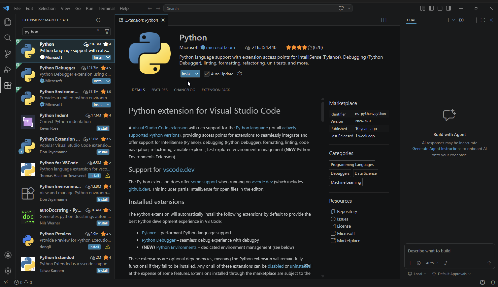

在 Windows 上安裝 Python、VSCode，寫第一支程式並打包成 .exe。
到官網下載 Windows 安裝檔：python.org/downloads，按黃色按鈕下載並執行。
下載完成後雙擊執行 .msix 檔案，會跳出下面這個視窗，按 Install Python。
裝完後驗證。按 Win + R，輸入 cmd，貼入：
py --version
顯示 Python 3.x.x 即成功。
下載並安裝（一路 Next）：code.visualstudio.com
打開後加裝 Python 擴充套件：

my_python。hello.py，貼入以下程式碼。a = int(input('請輸入第一個數字：'))
b = int(input('請輸入第二個數字：'))
print(a, '+', b, '=', a + b)
input('\n按 Enter 結束...')
按右上角的 ▶ 執行，下方會跳出 Terminal 讓您輸入兩個數字，按 Enter 後就會印出加總結果。
在 Terminal 安裝 PyInstaller：
py -m pip install pyinstaller
打包：
py -m PyInstaller --onefile hello.py
完成後打開 dist 資料夾，hello.exe 雙擊即可執行，可寄給沒裝 Python 的人。
確認您是用 py -m ... 的形式呼叫。例如打包用 py -m PyInstaller --onefile hello.py，安裝套件用 py -m pip install <套件名>。
常見誤判。加白名單，或改用 --onedir 取代 --onefile。
正常的，Python 直譯器一起被打包進去了。
程式末尾加 input('Press Enter...') 視窗就會停下來。